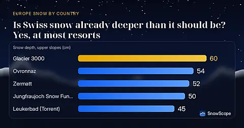

Switzerland snow report: snow depth, new snow and the week ahead
In Switzerland about 18,160 km² of high ground is white today, 59 % of the country's mapped mountains and hills. That is 2,070 km² more than yesterday. The deepest resort is Glacier 3000 with 58 cm on its upper slopes. Up to 125 cm of new snow could fall on the snowiest slopes in the week ahead.
See the live snow forecast for Glacier 3000 in the SnowScope appSnow depth, powder alerts and the 3D map, free.Today at a glance
| White area | 18,160 km² |
|---|---|
| Share of the high ground | 59 % |
| Most new snow in 24 h | 38 cm |
| Most new snow in 3 days | 83 cm |
| Next 3 days (snowiest slopes) | 85 cm |
| Next 7 days | 125 cm |
| Mostly white from | 1,300 m |
| Resorts with snow on top | 217 of 279 |
The last seven days
On 16 November about 16,510 km² was white; today it is 18,160 km².
The snow cover grew by 1,650 km² over these days.
The biggest three-day snowfall of the period reached 83 cm (to 19 November).
This season against a normal year
4 of the 5 deepest resorts are above their usual snow depth for 19 November.
Glacier 3000: 65 cm at about 2,238 m, a normal year has 24 cm; Zermatt: 232 cm at about 2,716 m, a normal year has 31 cm; Ovronnaz: 48 cm at about 1,898 m, a normal year has 20 cm; Jungfraujoch Snow Fun Park: 70 cm at about 3,450 m, a normal year has 74 cm; 4 Vallées: 36 cm at about 2,104 m, a normal year has 24 cm.
These depths are for one height on each mountain, below the top.
In past winters the best snow at Glacier 3000 usually came late March / early April.
Snowiest resorts today
Glacier 3000 leads with 58 cm on its upper slopes.
Then come Zermatt (57 cm), Ovronnaz (55 cm), Jungfraujoch Snow Fun Park (53 cm) and 4 Vallées (46 cm).
| Resort | Upper slopes | New, 3 days | Next 3 days | Top |
|---|---|---|---|---|
| Glacier 3000 | 58 cm | 100 cm | 107 cm | 2,931 m |
| Zermatt | 57 cm | 82 cm | 79 cm | 3,872 m |
| Ovronnaz | 55 cm | 85 cm | 92 cm | 2,456 m |
| Jungfraujoch Snow Fun Park | 53 cm | 82 cm | 85 cm | 3,461 m |
| 4 Vallées | 46 cm | 85 cm | 90 cm | 3,304 m |
Where the snow is coming next
Up to 85 cm is expected on the snowiest slopes in the next three days, and up to 125 cm over the week.
The snowiest day looks like Sunday 22 November, with up to 38 cm.
The last three days brought the most fresh snow to the Valais Alps and the Bernese Oberland.
The second week could add up to 27 cm where it snows most.
Snow by height
Height by height: 1,000-1,500 m: 1 cm on average, 40 % white; 1,500-2,000 m: 7 cm on average, 100 % white; 2,000-2,500 m: 14 cm on average, 100 % white; above 2,500 m: 27 cm on average, 100 % white.
Most of the ground is white from about 1,300 m up.
Planning a trip
Above 1,500 m the ground is almost fully white (100 % covered), so runs up there have a continuous base.
Between 1,000 m and 1,500 m the cover is patchy, about 40 % white: expect grass and stones between the snow.
The resorts with the highest lifts are the safest bet: Zermatt (3,872 m), Jungfraujoch Snow Fun Park (3,461 m) and 4 Vallées (3,304 m).
If you can choose the day, go after Sunday 22 November: the fresh snow then has time to settle and the roads to be cleared.
Day by day
- Thursday 19 November · 18,160 km² white, up to 83 cm of new snow in three days, deepest Glacier 3000 (58 cm) · Is Swiss snow already deeper than it should be? Yes, at most resorts
- Wednesday 18 November · 16,060 km² white, up to 64 cm of new snow in three days, deepest Glacier 3000 (52 cm) · Switzerland: Glacier 3000 leads at nearly double the typical mid-November depth
- Tuesday 17 November · 14,750 km² white, up to 45 cm of new snow in three days, deepest Zermatt (47 cm) · Alpine snow distribution after the storm: Valais Alps lead with 92 cm in 72 hours
- Monday 16 November · 16,510 km² white, up to 22 cm of new snow in three days, deepest Ovronnaz (136 cm) · Up to 112 cm snow forecast for Switzerland in seven days
Questions and answers
Is there snow in Switzerland right now?
Yes. About 18,160 km² of high ground is white, 59 % of the mapped mountains. The deepest resort is Glacier 3000 with 58 cm on its upper slopes.
Where is the most snow in Switzerland today?
Glacier 3000 leads with 58 cm on its upper slopes. Then come Zermatt (57 cm), Ovronnaz (55 cm) and Jungfraujoch Snow Fun Park (53 cm).
Will it snow in Switzerland this week?
Up to 85 cm is expected on the snowiest slopes in the next three days, and up to 125 cm over the week. The snowiest day looks like Sunday 22 November, with up to 38 cm.
From what height is there snow in Switzerland?
Most of the ground is white from about 1,300 m up.
How much new snow fell in Switzerland in the last three days?
Up to 83 cm on the snowiest slopes, 38 cm of it in the last 24 hours. At least 5 cm fell over some 16,460 km². The last three days brought the most fresh snow to the Valais Alps and the Bernese Oberland.
How many ski resorts in Switzerland have snow?
217 of the 279 resorts we follow have snow on their upper slopes today. Snow on top does not mean the lifts are open: check the resort before you go.
When is the best time to ski in Switzerland?
In past winters the best snow at Glacier 3000 usually came late March / early April.
Is the season off to a good start in Switzerland?
4 of the 5 deepest resorts are above their usual snow depth for 19 November.
Stories about Switzerland

Swiss snow depths on 19 November are well above normal. Glacier 3000 holds 60 cm, more than twice the typical depth for this date. Next week brings up to 125 cm more.

Swiss ski areas are running 142% of normal snow cover for November 18. Glacier 3000 tops the ranking with 52 cm, ahead of major storms forecast.

Fresh snow fell unevenly across Swiss mountains. The Valais Alps received 92 cm in three days; the Bernese Oberland 54 cm. Data from 17 November.